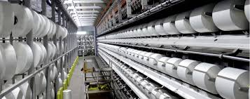
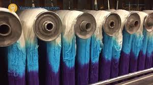
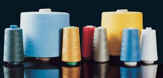

Mfg. of Polyester Staple Fibres
  About Company
Neelam Fibers manufacturing & Supplier of Polyester Cone Dyed Yarn
Neelam Fibers started the operation in the Year 2001 in manufacturing field of Polyester Cone Dyed Yarn Production. Presently Production achieved up to 4800 MT Per annum. Company has also ISO Certificate 9001-2000. Neelam offering outstanding Quality Standards in Bright filament, Textured, Twisted dyed Yarn, Semi Dull Textured Yarn & Doubling Yarn.
Our Products Used in Textile Industries Weaving, Knitting, Home Furnishing, Tapes & Elastics, Labels, Carpet, Shoe Uppers, auto looms, Embroidery & Various Industries at timely Delivery Schedule.
Neelam Fibers Highly Dynamic organization is Located in Surat ( Gujarat ) India, a geographic Locale in Western India, Which is well known for one of the Biggest Yarn manufacturing & Textile Hub of India
Contact us :
2028/29 , Jash Textile & Yarn Mkt, Ring Road Surat (Guj.) INDIA.
Tel. : +91-261-2339493/2363774
Fax : +91-261-2334135
E-mail : ashwin_patel88@yahoo.com
E-mail : neelamfibers@gmail.com
Mobile No. : +91-9825127951 / +91-9374710024
Whatsapp : +91-9825127951